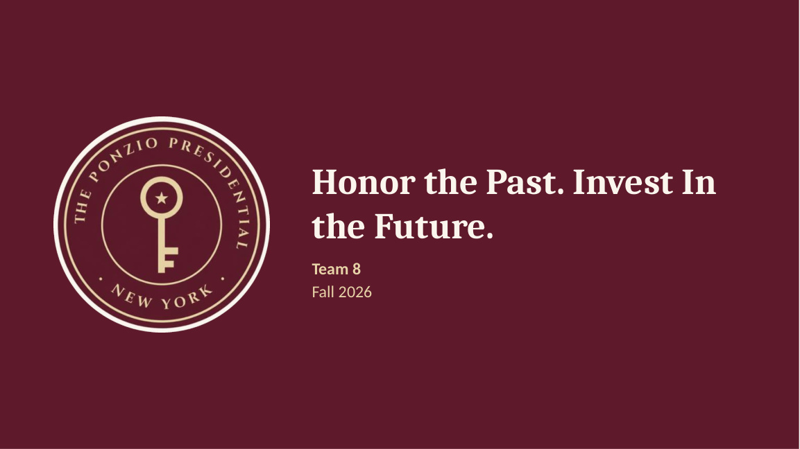
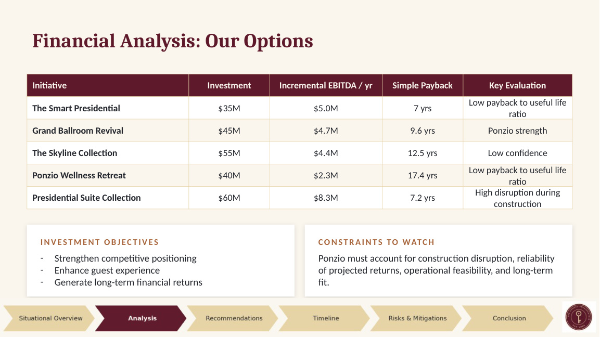

Rethinking Luxury Hospitality
A team consulting case evaluating how a luxury hotel could allocate its renovation budget.
How should the hotel invest $100 million?
For a team academic case, we evaluated renovation choices for the fictional Ponzio Presidential hotel. We needed to select two investment options that supported the hotel’s financial goals and guest experience.
Comparing investments and trade-offs
Our team compared potential renovations using estimated investment costs, annual EBITDA impact, simple payback periods, guest experience, rollout timelines, and implementation risks.
New suites and smart-room technology
We recommended investing $60 million in a Presidential Suite Collection and $35 million in Smart Presidential Technology, leaving $5 million for contingencies. Our case estimated $13.3 million of incremental annual EBITDA and a simple payback of about 7.1 years.
Balancing cost, impact, and risk
These are forecasts in a fictional academic case, not actual financial results. This was a collaborative team project.


What I took away from this project
This case helped me practice thinking through financial trade-offs, working on a recommendation as part of a team, and explaining the reasoning behind our choices. It also gave me more experience with risk assessment and presenting findings.